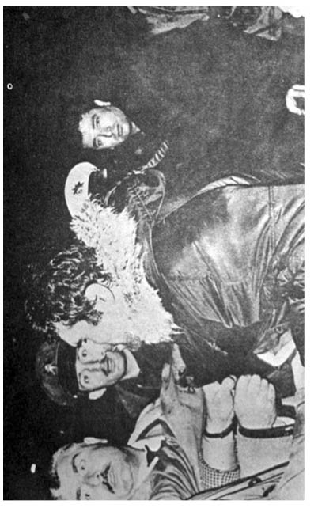
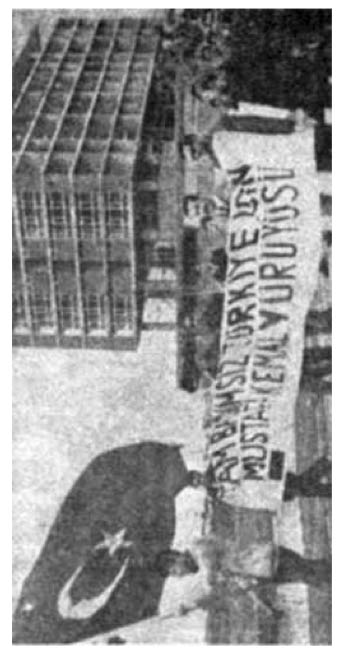

KAYNAKÇA
Deniz, Bir İsyancının İzleri - Turhan Feyizoğlu/Ozan Yayıncılık, İstanbul, Haziran 2005.
FKF, Fikir Kulüpleri Federasyonu - Turhan Feyizoğlu/Ozan Yayıncılık, İstanbul, Kasım 2004 (2. Baskı).
İdam Gecesi Anıları - Halit Çelenk/Tekin Yayınları, İstanbul,(13. Baskı).
Deniz Gezmiş, Yusuf Aslan, Hüseyin İnan, İdam Görüşmeleri/BDS Yayınları, İstanbul, 1988.
Dar Ağacında Üç Fidan - Nihat Behram/Everest Yayınları, İstanbul, 1976.
Gülünün Solduğu Akşam - Erdal Öz/Can Yayınları, İstanbul,(34. Baskı).
TKP Parti Tutanakları - www.tustav.org

